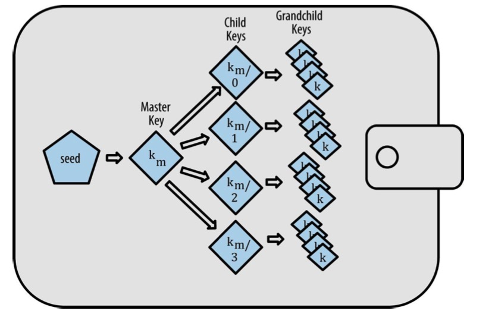
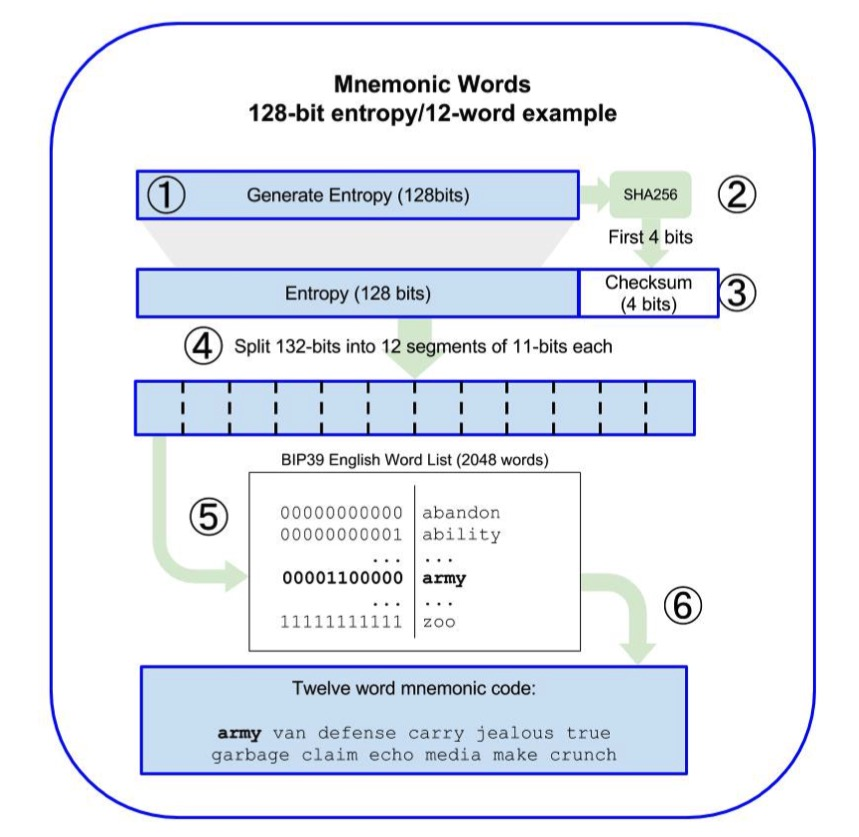
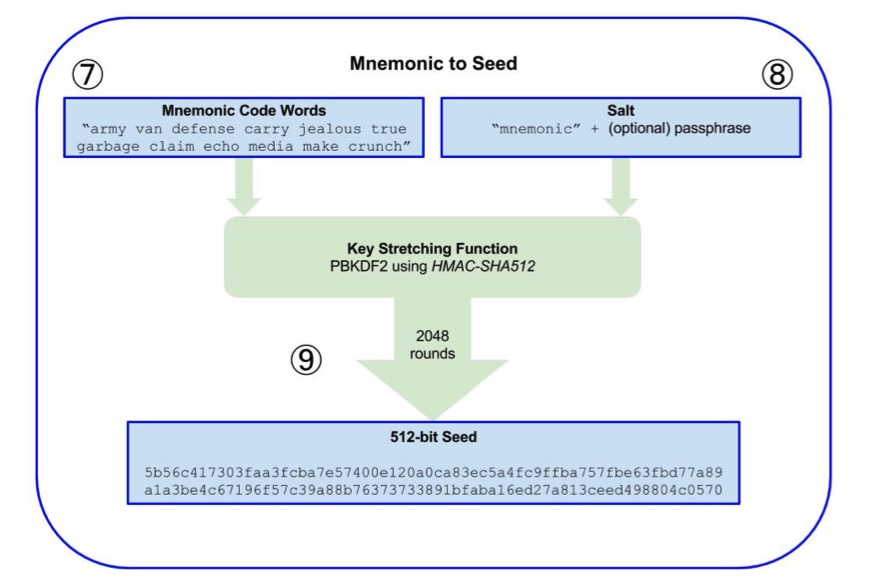

bip-0032-关于HDWallet解读
BIP0032的核心就是子秘钥的推导
如何从父秘钥(父节点)推出子秘钥(子节点) 可以从父私钥到子私钥 也可以从父公钥到子公钥 也可以从父公钥到子私钥
// Child returns a derived child extended key at the given index. When this
// extended key is a private extended key (as determined by the IsPrivate
// function), a private extended key will be derived. Otherwise, the derived
// extended key will be also be a public extended key.
//
// When the index is greater to or equal than the HardenedKeyStart constant, the
// derived extended key will be a hardened extended key. It is only possible to
// derive a hardended extended key from a private extended key. Consequently,
// this function will return ErrDeriveHardFromPublic if a hardened child
// extended key is requested from a public extended key.
//
// A hardened extended key is useful since, as previously mentioned, it requires
// a parent private extended key to derive. In other words, normal child
// extended public keys can be derived from a parent public extended key (no
// knowledge of the parent private key) whereas hardened extended keys may not
// be.
//
// NOTE: There is an extremely small chance (< 1 in 2^127) the specific child
// index does not derive to a usable child. The ErrInvalidChild error will be
// returned if this should occur, and the caller is expected to ignore the
// invalid child and simply increment to the next index.
func (k *ExtendedKey) Child(i uint32) (*ExtendedKey, error) {
// Prevent derivation of children beyond the max allowed depth.
if k.depth == maxUint8 {
return nil, ErrDeriveBeyondMaxDepth
}
// There are four scenarios that could happen here:
// 1) Private extended key -> Hardened child private extended key
// 2) Private extended key -> Non-hardened child private extended key
// 3) Public extended key -> Non-hardened child public extended key
// 4) Public extended key -> Hardened child public extended key (INVALID!)
// Case #4 is invalid, so error out early.
// A hardened child extended key may not be created from a public
// extended key.
isChildHardened := i >= HardenedKeyStart
if !k.isPrivate && isChildHardened {
return nil, ErrDeriveHardFromPublic
}
// The data used to derive the child key depends on whether or not the
// child is hardened per [BIP32].
//
// For hardened children:
// 0x00 || ser256(parentKey) || ser32(i)
//
// For normal children:
// serP(parentPubKey) || ser32(i)
keyLen := 33
data := make([]byte, keyLen+4)
if isChildHardened {
// Case #1.
// When the child is a hardened child, the key is known to be a
// private key due to the above early return. Pad it with a
// leading zero as required by [BIP32] for deriving the child.
copy(data[1:], k.key)
} else {
// Case #2 or #3.
// This is either a public or private extended key, but in
// either case, the data which is used to derive the child key
// starts with the secp256k1 compressed public key bytes.
copy(data, k.pubKeyBytes())
}
binary.BigEndian.PutUint32(data[keyLen:], i)
// Take the HMAC-SHA512 of the current key's chain code and the derived
// data:
// I = HMAC-SHA512(Key = chainCode, Data = data)
hmac512 := hmac.New(sha512.New, k.chainCode)
hmac512.Write(data)
ilr := hmac512.Sum(nil)
// Split "I" into two 32-byte sequences Il and Ir where:
// Il = intermediate key used to derive the child
// Ir = child chain code
il := ilr[:len(ilr)/2]
childChainCode := ilr[len(ilr)/2:]
// Both derived public or private keys rely on treating the left 32-byte
// sequence calculated above (Il) as a 256-bit integer that must be
// within the valid range for a secp256k1 private key. There is a small
// chance (< 1 in 2^127) this condition will not hold, and in that case,
// a child extended key can't be created for this index and the caller
// should simply increment to the next index.
//这里的2^127是怎么算出来的呢?
/*
N=FFFFFFFFFFFFFFFFFFFFFFFFFFFFFFFEBAAEDCE6AF48A03BBFD25E8CD0364141
如果il是均匀分布,那么出现大于N的可能性是P{il>N}=(MaxUint256-N)/MaxUint256
约等于1/(2^127)
但是为什么要排除这种情况,而不是取模呢
*/
ilNum := new(big.Int).SetBytes(il)
if ilNum.Cmp(btcec.S256().N) >= 0 || ilNum.Sign() == 0 {
return nil, ErrInvalidChild
}
// The algorithm used to derive the child key depends on whether or not
// a private or public child is being derived.
//
// For private children:
// childKey = parse256(Il) + parentKey
//
// For public children:
// childKey = serP(point(parse256(Il)) + parentKey)
var isPrivate bool
var childKey []byte
if k.isPrivate {
// Case #1 or #2.
// Add the parent private key to the intermediate private key to
// derive the final child key.
//
// childKey = parse256(Il) + parenKey
keyNum := new(big.Int).SetBytes(k.key)
ilNum.Add(ilNum, keyNum)
ilNum.Mod(ilNum, btcec.S256().N)
childKey = ilNum.Bytes()
isPrivate = true
} else {
// Case #3.
// Calculate the corresponding intermediate public key for
// intermediate private key.
ilx, ily := btcec.S256().ScalarBaseMult(il)
if ilx.Sign() == 0 || ily.Sign() == 0 {
return nil, ErrInvalidChild
}
// Convert the serialized compressed parent public key into X
// and Y coordinates so it can be added to the intermediate
// public key.
pubKey, err := btcec.ParsePubKey(k.key, btcec.S256())
if err != nil {
return nil, err
}
// Add the intermediate public key to the parent public key to
// derive the final child key.
//
// childKey = serP(point(parse256(Il)) + parentKey)
childX, childY := btcec.S256().Add(ilx, ily, pubKey.X, pubKey.Y)
pk := btcec.PublicKey{Curve: btcec.S256(), X: childX, Y: childY}
childKey = pk.SerializeCompressed()
/*
childKey对应的私钥是什么呢?
K1=k1*G
K2=k2*G
K3=K1+K2=k1*G+k2*G=(k1+k2)*G
因此K3对应的私钥是k1+k2
所以childKey对应的私钥就是il+(k.key 对应的私钥)
*/
}
// The fingerprint of the parent for the derived child is the first 4
// bytes of the RIPEMD160(SHA256(parentPubKey)).
parentFP := btcutil.Hash160(k.pubKeyBytes())[:4]
return NewExtendedKey(k.version, childKey, childChainCode, parentFP,
k.depth+1, i, isPrivate), nil
}
2
3
4
5
6
7
8
9
10
11
12
13
14
15
16
17
18
19
20
21
22
23
24
25
26
27
28
29
30
31
32
33
34
35
36
37
38
39
40
41
42
43
44
45
46
47
48
49
50
51
52
53
54
55
56
57
58
59
60
61
62
63
64
65
66
67
68
69
70
71
72
73
74
75
76
77
78
79
80
81
82
83
84
85
86
87
88
89
90
91
92
93
94
95
96
97
98
99
100
101
102
103
104
105
106
107
108
109
110
111
112
113
114
115
116
117
118
119
120
121
122
123
124
125
126
127
128
129
130
131
132
133
134
135
136
137
138
139
140
141
142
143
144
145
146
147
148
149
150
151
152
153
154
155
156
157
158
为什么有强化衍生和普通衍生的区别
对于Index大于2^31的就是强化衍生(isChildHardened), 强化衍生使用父节点的私钥衍生Child的私钥和chainCode, 而普通衍生使用父节点的公钥衍生child的私钥和chainCode.
强化衍生和普通衍生的细节
一下来自于extendkey.go中的Child函数, 这两种方式都是得到子节点的PrivateKey和childChainCode. 同时无法通过子节点的PrivateKey和childChainCode来倒推父节点的.
if isChildHardened {
// Case #1.
// When the child is a hardened child, the key is known to be a
// private key due to the above early return. Pad it with a
// leading zero as required by [BIP32] for deriving the child.
copy(data[1:], k.key)
} else {
// Case #2 or #3.
// This is either a public or private extended key, but in
// either case, the data which is used to derive the child key
// starts with the secp256k1 compressed public key bytes.
copy(data, k.pubKeyBytes())
}
binary.BigEndian.PutUint32(data[keyLen:], i)
// Take the HMAC-SHA512 of the current key's chain code and the derived
// data:
// I = HMAC-SHA512(Key = chainCode, Data = data)
hmac512 := hmac.New(sha512.New, k.chainCode)
hmac512.Write(data)
ilr := hmac512.Sum(nil)
// Split "I" into two 32-byte sequences Il and Ir where:
// Il = intermediate key used to derive the child
// Ir = child chain code
il := ilr[:len(ilr)/2]
childChainCode := ilr[len(ilr)/2:]
2
3
4
5
6
7
8
9
10
11
12
13
14
15
16
17
18
19
20
21
22
23
24
25
26
父节点到子节点的三种推导方式
父私钥到子私钥
index大于2^31,
ilr:=sha512(0,ParentPrivateKey,index,ParentChainCode)
childPrivateKey:=ilr[:32]
childChainCode:=ilr[32:]
2
3
父公钥到子私钥
index小于2^31
ilr:=sha512(ParentPubicKey,index,ParentChainCode)
childPrivateKey:=ilr[:32]
childChainCode:=ilr[32:]
2
3
4
5
父公钥到子公钥
ilr:=sha512(ParentPubicKey,index,ParentChainCode)
il:=ilr[:32]
childChainCode:=ilr[32:]
ilx, ily := btcec.S256().ScalarBaseMult(il)
childX, childY := btcec.S256().Add(ilx, ily, paretPubKey.X, paretPubKey.Y)
pk := btcec.PublicKey{Curve: btcec.S256(), X: childX, Y: childY}
childPubKey = pk.SerializeCompressed()
2
3
4
5
6
7
childKey对应的私钥是什么呢? K1=k1G K2=k2G K3=K1+K2=k1G+k2G=(k1+k2)*G 因此K3对应的私钥是k1+k2 所以childKey对应的私钥就是il+(k.key 对应的私钥)
从推导过程可以看出,一旦子私钥暴露,这种方式会导致父私钥也暴露 不过这种也有明显的好处,就是我不需要知道父私钥,只需要知道父公钥和父chainCode就可以推导出所有需要的收款地址. 推导人自己都不知道推导出来的收款地址对应的私钥是什么.
BIP0032树状私钥管理

BIP0039 助记词

从助记词到Seed过程要计算起来非常耗时,否则容易被暴力攻破 
BIP0044 简介
BIP 0044实际上是如何规范使用bip0032,我们一般的钱包都是树状的, 这部分我没看懂,他是怎么管理的.
m / purpose' / coin_type' / account' / change / address_index purpose总是44, 第二层的coin_type有相关规范,自行查询即可 account就是对应钱包中的account
第一层的 purpose 总是被设定为 44'。 第二层的“coin_type”特指币种并且允许多元货币 HD 钱包中的货币在第二个层级 下有自己的亚树状结构。目前有三种货币被定义：Bitcoin is m/44'/0'、Bitcoin Testnet is m/44'/1'，以及 Litecoin is m/44'/2'。 树的第三层级是“account”，这可以允许使用者为了会计或者组织目的，而去再细 分他们的钱包到独立的逻辑性亚账户。 举个例子，一个 HD 钱包可能包含两个比 特币“账户”：m/44'/0'/0' 和 m/44'/0'/1'。每个账户都是它自己亚树的根。
第四层级就是“change”。每一个 HD 钱包有两个亚树，一个是用来接收地址一个是 用来创造找零地址。注意无论先前的层级是否使用强化衍生，这一层级使用的都 是常规衍生。这是为了允许这一层级的树可以在不安全环境下，输出扩展公钥。
被 HD 钱包衍生的可用的地址是第四层级的子级，就是第五层级的树的 “address_index”。比如，第三个层级的主账户收到比特币支付的地址就是 M/44'/0'/0'/0/2。 表 5-7 展示了更多的例子。
| HD路径 | 主要描述 |
|---|---|
| M/44'/0'/0'/0/2 | 第三个收到公共钥匙的主比特币账户 |
| M/44'/0'/3'/1/14 | 第十五个改变地址公钥的第四个比特币账户 |
| m/44'/2'/0'/0/1 | 为了签署交易的在莱特币主账户的第二个私钥 |